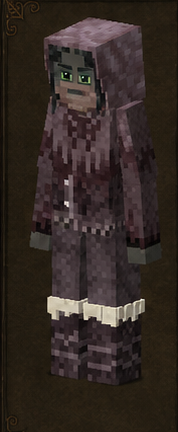
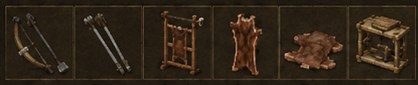

Cazador
Hunter · código oficial
hunter · ficha 09/16
Rasgos: 7
Bonus: 9
Malus: 7
Recetas: 48

Resumen humano
cazador real: daño a distancia, animales, pieles y cuero. Pierde valor donde no haya fauna/economía de cuero.
Esta línea es interpretación funcional breve; lo importante son los números y recetas de abajo.
Bonus objetivos
- ahorro de durabilidad de cuchillo: **+75%** (valor interno `0.75`)
- daño a distancia: **+20%** (valor interno `0.2`)
- daño contra animales: **+50%** (valor interno `0.5`)
- daño recibido de animales: **-25%** (valor interno `-0.25`)
- drop de pieles: **+100%** (valor interno `1`)
- drop/rendimiento de animales: **+25%** (valor interno `0.25`)
- precisión a distancia: **+75%** (valor interno `0.75`)
- tiempo de despiece/cosecha animal: **-50%** (valor interno `-0.5`)
- velocidad al caminar: **+10%** (valor interno `0.1`)
Malus objetivos
- drop de mineral: **-10%** (valor interno `-0.1`)
- pérdida de estabilidad temporal: **+25%** (valor interno `0.25`)
- saciedad de fruta: **-10%** (valor interno `-0.1`)
- saciedad de grano: **-10%** (valor interno `-0.1`)
- saciedad de verdura: **-10%** (valor interno `-0.1`)
- velocidad al picar mineral: **-10%** (valor interno `-0.1`)
- velocidad al picar piedra: **-10%** (valor interno `-0.1`)
Rasgos oficiales y efectos reales
| Rasgo | Tipo | Datos objetivos |
|---|---|---|
Francotiradormarksman | positivo | precisión a distancia: +75% (interno 0.75)daño a distancia: +20% (interno 0.2)velocidad al caminar: +10% (interno 0.1) |
Cazadorhunter | positivo | sin atributos numéricos en traits.json; desbloqueo/rasgo de receta |
Tiradorbowyer | desbloqueo/vanilla | sin atributos numéricos en traits.json; desbloqueo/rasgo de receta |
Guardabosquesranger | positivo | daño contra animales: +50% (interno 0.5)daño recibido de animales: -25% (interno -0.25) |
Talladorcarver | positivo | tiempo de despiece/cosecha animal: -50% (interno -0.5)drop/rendimiento de animales: +25% (interno 0.25)drop de pieles: +100% (interno 1)ahorro de durabilidad de cuchillo: +75% (interno 0.75) |
Delicadodelicate | negativo | drop de mineral: -10% (interno -0.1)velocidad al picar mineral: -10% (interno -0.1)velocidad al picar piedra: -10% (interno -0.1)pérdida de estabilidad temporal: +25% (interno 0.25) |
Carnívorocarnivorous | negativo | saciedad de grano: -10% (interno -0.1)saciedad de verdura: -10% (interno -0.1)saciedad de fruta: -10% (interno -0.1) |
Recetas / desbloqueos
28mesa normal
6estación
14compatibilidad
48salidas listadas
Categorías detectadas
Procesado de materiales: 25Butchering: bolsas y equipo: 7Mesa de trabajo de cuero: 6More Arrows: flechas: 3Primitive Survival: cecina: 3Flechas: 2Curtido: 1Butchering: flechas: 1
Ver salidas exactas de recetas de esta clase (48)
| Modo | Categoría legible | Resultado legible | Nombre ES |
|---|---|---|---|
| mesa de crafteo normal | Flechas | Arrow metal ×1 | — |
| mesa de crafteo normal | Flechas | Arrow bone ×1 | — |
| mesa de crafteo normal | Procesado de materiales | Hide scraped small ×1 | — |
| mesa de crafteo normal | Procesado de materiales | Hide scraped medium ×1 | — |
| mesa de crafteo normal | Procesado de materiales | Hide scraped large ×1 | — |
| mesa de crafteo normal | Procesado de materiales | Hide scraped huge ×1 | — |
| mesa de crafteo normal | Procesado de materiales | Leather normal liso ×1 | — |
| mesa de crafteo normal | Procesado de materiales | Leather normal liso ×2 | — |
| mesa de crafteo normal | Procesado de materiales | Leather normal liso ×3 | — |
| mesa de crafteo normal | Procesado de materiales | Leather normal liso ×5 | — |
| mesa de crafteo normal | Procesado de materiales | Leather sturdy liso ×1 | — |
| mesa de crafteo normal | Procesado de materiales | Hide oiled species ×4 | — |
| mesa de crafteo normal | Procesado de materiales | Hide oiled species ×3 | — |
| mesa de crafteo normal | Procesado de materiales | Hide oiled species ×2 | — |
| mesa de crafteo normal | Procesado de materiales | Hide oiled species ×1 | — |
| mesa de crafteo normal | Procesado de materiales | Hide oiled species ×2 | — |
| mesa de crafteo normal | Procesado de materiales | Hide oiled species ×1 | — |
| mesa de crafteo normal | Procesado de materiales | Hide oiled species ×1 | — |
| mesa de crafteo normal | Procesado de materiales | Hide oiled species ×1 | — |
| mesa de crafteo normal | Procesado de materiales | Hide oiled species ×4 | — |
| mesa de crafteo normal | Procesado de materiales | Hide oiled species ×3 | — |
| mesa de crafteo normal | Procesado de materiales | Hide oiled species ×2 | — |
| mesa de crafteo normal | Procesado de materiales | Hide oiled species ×1 | — |
| mesa de crafteo normal | Procesado de materiales | Hide oiled species ×2 | — |
| mesa de crafteo normal | Procesado de materiales | Hide oiled species ×1 | — |
| mesa de crafteo normal | Procesado de materiales | Hide oiled species ×1 | — |
| mesa de crafteo normal | Procesado de materiales | Hide oiled species ×1 | — |
| mesa de crafteo normal | Curtido | Leather ×1 | — |
| estación especial | Mesa de trabajo de cuero | Hide scraped size ×1 | — |
| estación especial | Mesa de trabajo de cuero | Hide scraped huge ×3 | — |
| estación especial | Mesa de trabajo de cuero | Hide scraped huge ×2 | — |
| estación especial | Mesa de trabajo de cuero | Hide scraped size ×2 | — |
| estación especial | Mesa de trabajo de cuero | Hide scraped huge ×6 | — |
| estación especial | Mesa de trabajo de cuero | Hide scraped huge ×4 | — |
| receta de compatibilidad | Butchering: flechas | Arrow bone ×1 | — |
| receta de compatibilidad | Butchering: bolsas y equipo | Butcherybag standard ×1 | — |
| receta de compatibilidad | Butchering: bolsas y equipo | Butcherybag standard ×1 | — |
| receta de compatibilidad | Butchering: bolsas y equipo | Butcherybag standard ×1 | — |
| receta de compatibilidad | Butchering: bolsas y equipo | Butcherybag standard ×1 | — |
| receta de compatibilidad | Butchering: bolsas y equipo | Butcherybag leather ×1 | — |
| receta de compatibilidad | Butchering: bolsas y equipo | Butcherybag primitive ×1 | — |
| receta de compatibilidad | Butchering: bolsas y equipo | Butcherybag sturdyleather ×1 | — |
| receta de compatibilidad | More Arrows: flechas | Arrow barbed metal ×1 | — |
| receta de compatibilidad | More Arrows: flechas | Arrow blunt metal ×1 | — |
| receta de compatibilidad | More Arrows: flechas | Arrow bodkin metal ×1 | — |
| receta de compatibilidad | Primitive Survival: cecina | Jerky bushmeat raw ×8 | — |
| receta de compatibilidad | Primitive Survival: cecina | Jerky redmeat raw ×8 | — |
| receta de compatibilidad | Primitive Survival: cecina | Jerky fish raw ×8 | — |
Archivos de esta ficha
Las exportaciones PNG/MD se generan desde la ficha dinámica actual.